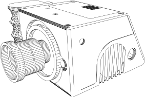

Zine16 es un proyecto en desarrollo. Se trata de una cámara digital libre compatible con ópticas manuales de 16mm y 8mm. Está basada en Magic Lantern1, por lo que parte de un cuerpo de cámara liberado, permitiendo obtener un negativo digital real. Funciona a 24fps con una obturación de 172,8º. Su tamaño de sensor es variable, por lo que no tiene restricciones para filmar en casi cualquier relacion de aspecto —cómo 1.33:1, 1.66:1 o 2:1— y con casi cualquier óptica. Utiliza dos baterías en serie 18650 en un pequeño circuito de protección contra polaridad inversa basado en un mosfet (pfet). Dispone de un sistema ventilación activa mediante un ventilador y disipadores de calor; este sistema es activado manualmente.

(Re)utiliza ópticas de cine y televisión de montura C2, conocida por ser la montura universal más antigüa que aún sigue en uso. El cuerpo está fabricado en plástico reciclado reforzado y su empuñadura está fabricada con una mezcla reciclada de madera. El diseño soporta el usor de un visor LCD Zacuto. Su sistema de almacenamiento utiliza tarjetas SD con la frecuencia aumentada, por lo que es muy económico. Esta completamente diseñada en FreeCAD. No graba sonido, ni permite el uso de monitores externos, ni de baterías propietarias. Tampoco tiene soporte para ópticas con autofoco, ni con estabilizador.